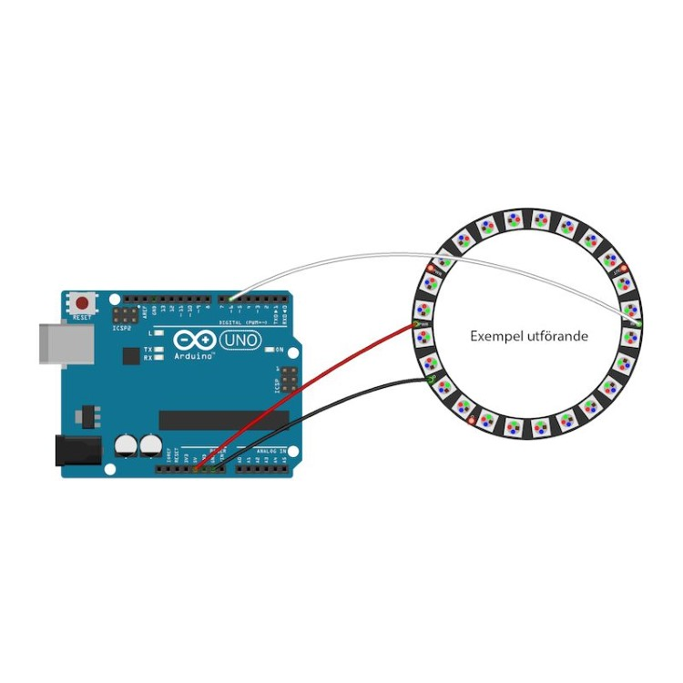

LED Workshop
LED Workshop
LED Workshop
LED Workshop
Grab the code here: https://bit.ly/2OUtDUN
Introduction to Addressable LEDS


Basic LEDS Need a lot of Wiring

Addressable LEDs provide circuitry to communicate serially

Each LED has a chip to receive, decode, drive LED’s and propagate data

They are chainable, fairly cheap and have their own resistors etc..

You can drive 10000's from 1 microcontroller
Adafruit has branded these Neopixels

You can get them for half the price on Ebay as ws2812's

In addition to the LED you need something to control them. We are going to use a programmable microcontroller
We will be using the:
Adafruit Feather 328pArduino is composed of two major parts:
- The Microcontroller board, which is the piece of hardware you program to control your projects.
- The Arduino IDE, the piece of software you run on your computer. You use the IDE to create a sketch(a program) that you upload to the Arduino board. The sketch tells the board what to do.
SOME ARDUINO TERMS
- “sketch” – a program you write to run on an Arduino board
- “pin” – an input or output connected to something. e.g. output to an LED, input from a knob.
THE ARDUINO IDE

- Like a text editor
- View/write/edit sketches
- But then you program them into the micrcontroller
We need to set up the Arduino IDE with the board profile for the Feather 382p
InstructionsInstall the USB driver here
HereIn the arduino preferences add this to the addtional boards manager
https://adafruit.github.io/arduino-board-index/package_adafruit_index.json
From tools -> Board -> Board Manager install the adafruit AVR boards
Now plug in the feather with a USB cable and select the feather 328p and port
Upload the blink program from the examples to test the board
Lets go over the basics of this program
Great, we will come back to this. Now we have to learn to solder!
Let's pactice soldering with some scraps!
The WS2812 have a 5v, GND and Data In (DIN) pin
This is how we will hook ours up
Steps:
- Cut and strip wires
- Tin wires and led pads
- Solder everything together
- Test
- Assemble
- Program LED code
Import the NeoPixel Library

Import the NeoPixel Library

Open Strandtest from the examples
Let's try some examples and write our own code!
For loop
FastLED
Fast LED LibraryLet's look at the examples
APA102
APA102 aka “Superled”